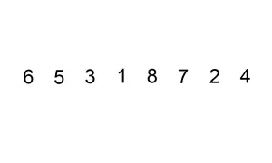
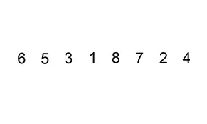

Cargo Cult Programming
Spaghetti code
Object Orgy
God Object
Busy Waiting
public class Demo {
public static void main(String[] args) {
boolean eventHappened = false;
while(!eventHappened) {
Thread.sleep(1000); //duerme 1 segundo
eventHappened = //¿seguimos esperando?
}
//¡ya podemos seguir la ejecución!
}
}
Observer Pattern
public class Demo {
public static void main(String[] args) {
EventManager eventManager = new EventManager();
Listener l1 = new Listener() {
public void trigger(Event event) {
//hacer algo con el evento
}
};
Listener l2 = new Listener() {
public void trigger(Event event) {
//hacer algo con el evento
}
};
eventManager.addObserver(l1);
eventManager.addObserver(l2);
//pasa algo que genera un objeto Evento e1
eventManager.notifyObservers(e1);
}
}
public class Event {
//objeto para contener información útil del evento
private String message;
//Los atributos se suelen inicializar en el constructor
public Event(String message) {
this.message = message;
}
//getters
public String getMessage() {
return this.message;
}
}
//Objetos interesados en eventos de este tipo
//Uso el nombre "Listener" porque mucha gente
//llama a este patrón Event-Listener
public interface Listener {
public void trigger(Event event);
}
//Gestor de Eventos
public class EventManager {
//a quién hay que notificar
private final List<Listener> observers = new ArrayList<Listener>();
//añadir observador a la lista
public void addObserver(Listener observer) {
observers.add(observer);
}
//función a la que llamará el creador del evento
public void notifyObservers(String event) {
observers.forEach(Listener::trigger);
}
}
public class Demo {
public static void main(String[] args) {
EventManager eventManager = new EventManager();
Listener l1 = new Listener() {
public void trigger(Event event) {
//hacer algo con el evento
}
};
Listener l2 = new Listener() {
public void trigger(Event event) {
//hacer algo con el evento
}
};
eventManager.addObserver(l1);
eventManager.addObserver(l2);
//pasa algo que genera un objeto Evento e1
eventManager.notifyObservers(e1);
}
}
Preguntas
Esta presentación está en